Constitution or rules, 17 pages
“Suggestion Constitution for the Tompkins County Central Labor Council”
Undated [1980s]Undated
A model constitution for an AFL-CIO central labor council, prepared with “Tompkins County Central Labor Council” typed on its cover. It has an order of business, explanatory notes in the margins, articles on delegates, officers, meetings, finances, charges, and committees, an index, and the delegates' and officers' oaths.
Page 9 was photographed twice; the duplicate is not shown.
Download or cite this itemPages

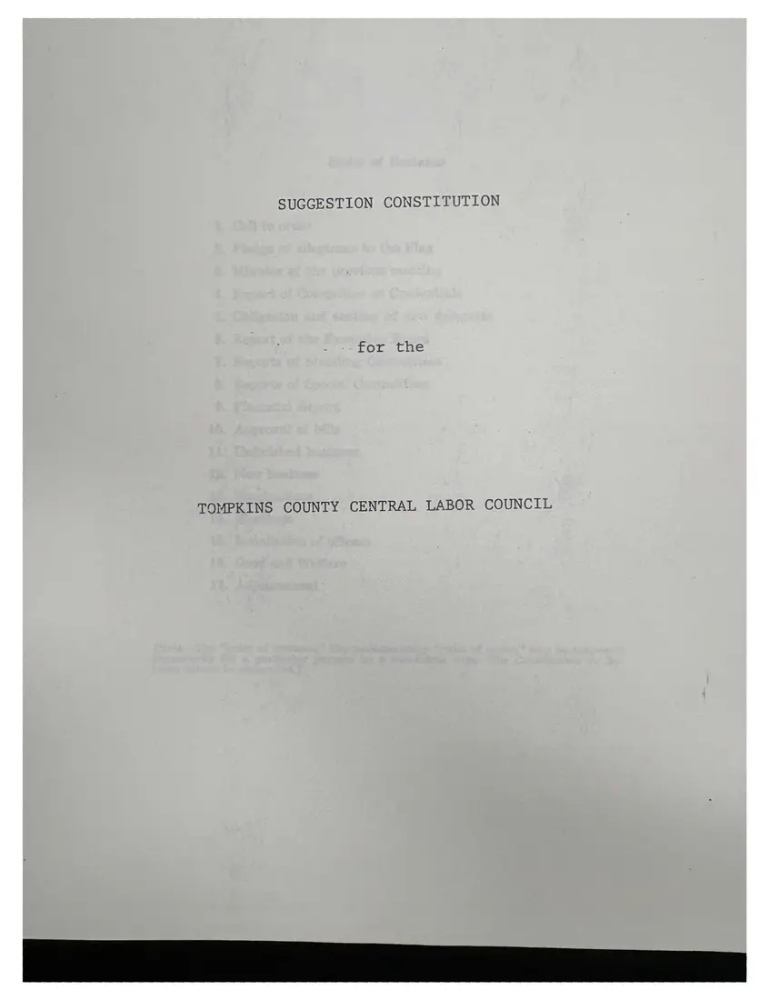
(open zoom view)Read the page text (machine-read, mostly readable)
This text was generated automatically from the photograph and has not been corrected. The image is the authoritative record.
SUGGESTION CONSTITUTION for the TOMPKINS COUNTY CENTRAL LABOR COUNCIL

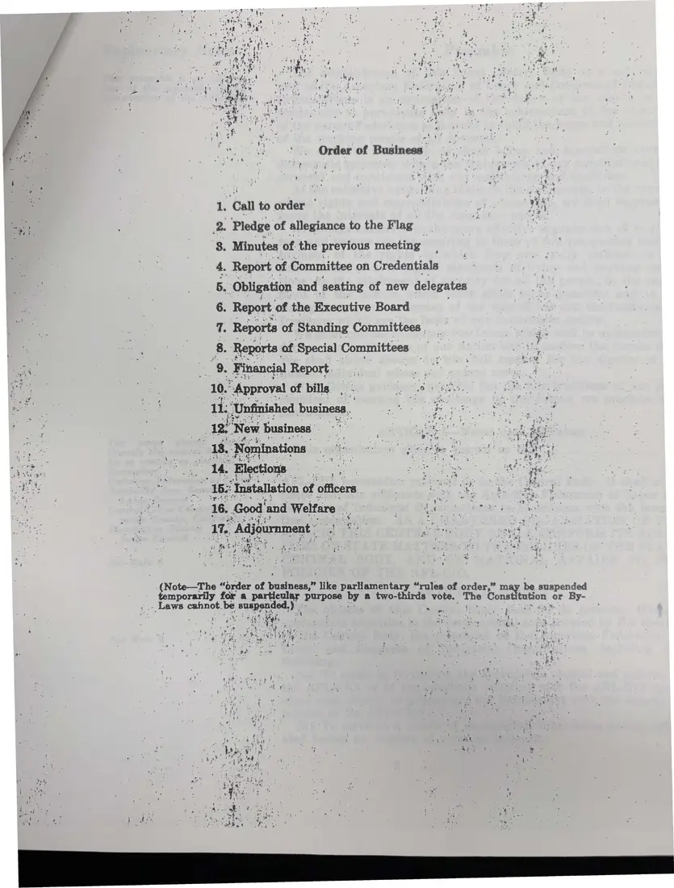
(open zoom view)Read the page text (machine-read, many errors)
This text was generated automatically from the photograph and has not been corrected. The image is the authoritative record.
285}
a o ils 90. ae
10. ‘Approval of bills |. a 3 eae
4 iT. ‘Adjournment ayes ve yer . mets!
7 ef
ts zk
zy" rs SO
af af
ay ae Soe
' x te
ey Jor ay
é thee, agen!
‘ re ery |
fa 2 eA gu a t4
Call to order evil : ves
Pledge of allegiance to the Flag € he
Minutes of the previous meeting |
Report of Committee on Credentials
Obligation and seating of new delegates
Report, of the Executive Board
Reports of Standing Committees,
Reports. of Special Committees Our thik the
*: Financial Report. tendPhgha :
UL ied i business, ibis ce ee. £ ane f
i od and Welfare. ‘, Tn An ST : .
4 i. ° 451 Ma
f (4 wf ~¥f
(Note—The “peder of business,” like parliamentary “rules of order,” may be suspended
temporarily for a particular purpose oy a two-thirds vote. The ‘Constitation or By-
‘Laws cahnot. be suspended, Ye ; SP ag
py Bh Beh
Tae eee : ‘ CW eer Ak
e : 4 oy ag sibs ¢ oN W
rd whet
ts MET j r
LBS $
ae é > ont
fuse {
i be
Get
ys AA : i
rad $ a4
yc i
5 ae ¥
ral i -
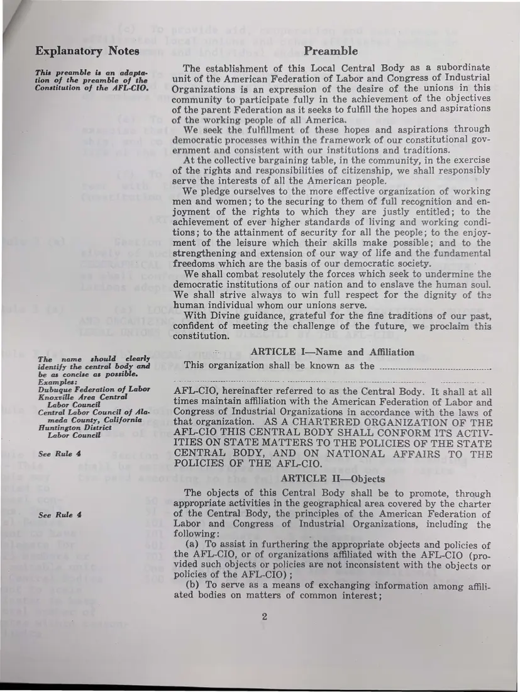
(open zoom view)Read the page text (machine-read, mostly readable)
This text was generated automatically from the photograph and has not been corrected. The image is the authoritative record.
Explanatory Notes This preamble is an adapta- tion of the preamble of the Constitution of the AFL-CIO. The name should clearly identify the central body and be as concise as possible. Examples: Dubuque Federation of Labor Knoxville Area Central Labor Council Central Labor Council of Ala- meda County, California Huntington District Labor Council See Rule 4 See Rule 4 Preamble The establishment of this Local Central Body as a subordinate unit of the American Federation of Labor and Congress of Industrial Organizations is an expression of the desire of the unions in this community to participate fully in the achievement of the objectives of the parent Federation as it seeks to fulfill the hopes and aspirations of the working people of all America. We seek the fulfillment of these hopes and aspirations through democratic processes within the framework of our constitutional gov- ernment and consistent with our institutions and traditions. At the collective bargaining table, in the community, in the exercise of the rights and responsibilities of citizenship, we shall responsibly serve the interests of all the American people. We pledge ourselves to the more effective organization of working men and women; to the securing to them of full recognition and en- joyment of the rights to which they are justly entitled; to the achievement of ever higher standards of living and working condi- tions; to the attainment of security for all the people; to the enjoy- ment of the leisure which their skills make possible; and to the strengthening and extension of our way of life and the fundamental freedoms which are the basis of our democratic society. We shall combat resolutely the forces which seek to undermine the democratic institutions of our nation and to enslave the human soul. We shall strive always to win full respect for the dignity of the human individual whom our unions serve. With Divine guidance, grateful for the fine traditions of our past, confident of meeting the challenge of the future, we proclaim this constitution. ARTICLE I—Name and Affiliation This organization shall be known as the AFL-CIO, hereinafter referred to as the Central Body. It shall at all times maintain affiliation with the American Federation of Labor and Congress of Industrial Organizations in accordance with the laws of that organization. AS A CHARTERED ORGANIZATION OF THE AFL-CIO THIS CENTRAL BODY SHALL CONFORM ITS ACTIV- ITIES ON STATE MATTERS TO THE POLICIES OF THE STATE CENTRAL BODY, AND ON NATIONAL AFFAIRS TO THE POLICIES OF THE AFL-CIO. ARTICLE I—Objects The objects of this Central Body shall be to promote, through appropriate activities in the geographical area covered by the charter of the Central Body, the principles of the American Federation of Labor and Congress of Industrial Organizations, including the following: : (a) To assist in furthering the appropriate objects and policies of the AFL-CIO, or of organizations affiliated with the AFL-CIO (pro- vided such objects or policies are not inconsistent with the objects or policies of the AFL-CIO) ; (b) To serve as a means of exchanging information among affili- ated bodies on matters of common interest; ;

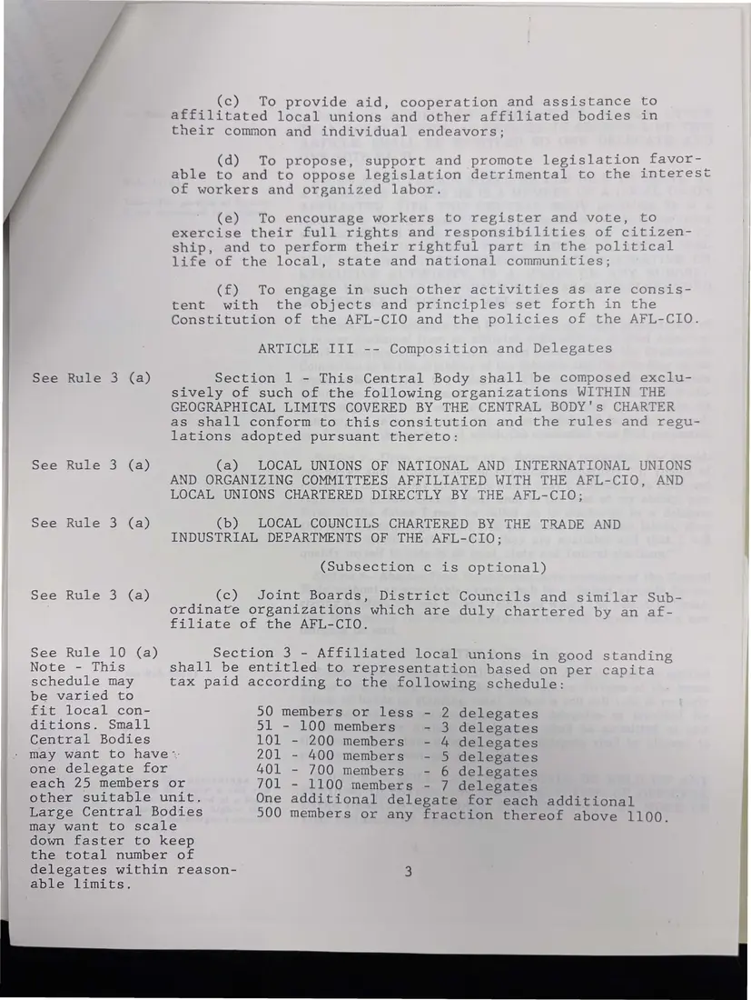
(open zoom view)Read the page text (machine-read, mostly readable)
This text was generated automatically from the photograph and has not been corrected. The image is the authoritative record.
(c) To provide aid, cooperation and assistance to affilitated local unions and other affiliated bodies in their common and individual endeavors; (d) To propose, support and promote legislation favor- able to and to oppose legislation detrimental to the interest of workers and organized labor. (e) To encourage workers to register and vote, to exercise their full rights and responsibilities of citizen- ship, and to perform their rightful part in the political life of the local, state and national communities; (f) To engage in such other activities as are consis- tent with the objects and principles set forth in the Constitution of the AFL-CIO and the policies of the AFL-CIO. ARTICLE III -- Composition and Delegates See Rule 3 (a) Section 1 - This Central Body shall be composed exclu- sively of such of the following organizations WITHIN THE GEOGRAPHICAL LIMITS COVERED BY THE CENTRAL BODY's CHARTER as shall conform to this consitution and the rules and regu- lations adopted pursuant thereto: See Rule 3 (a) (a) LOCAL UNIONS OF NATIONAL AND INTERNATIONAL UNIONS AND ORGANIZING COMMITTEES AFFILIATED WITH THE AFL-CIO, AND LOCAL UNIONS CHARTERED DIRECTLY BY THE AFL-CIO; See Rule 3 (a) (b) LOCAL COUNCILS CHARTERED BY THE TRADE AND INDUSTRIAL DEPARTMENTS OF THE AFL-CIO; (Subsection c is optional) See Rule 3 (a) (c) Joint Boards, District Councils and similar Sub- ordinate organizations which are duly chartered by an af- filiate of the AFL-CIO. See Rule 10 (a) Section 3 - Affiliated local unions in good standing Note - This shall be entitled to representation based on per capita schedule may tax paid according to the following schedule: be varied to fit local con- 50 members or less - 2 delegates ditions. Small 51 - 100 members - 3 delegates Central Bodies 101 - 200 members - 4 delegates may want to have~ 201 - 400 members - 5 delegates one delegate for 401 - 700 members - 6 delegates each 25 members or 701 - 1100 members - 7 delegates ; other suitable unit. One additional delegate for each additional Large Central Bodies 500 members or any fraction thereof above 1100 ; may want to scale j down faster to keep qj the total number of ol delegates within reason- 3 : able limits.

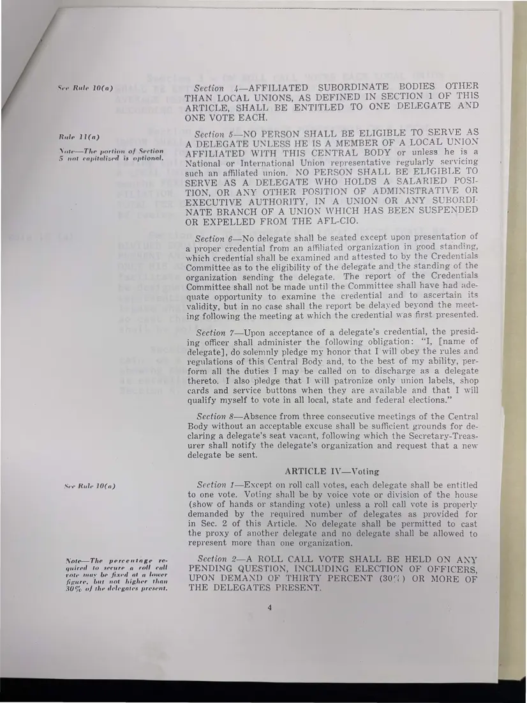
(open zoom view)Read the page text (machine-read, mostly readable)
This text was generated automatically from the photograph and has not been corrected. The image is the authoritative record.
See Rule 10(a) Rule ll(a) Vote—The portion of Section 5 not capitalised is optional, See Rule 10(a) Note—The percentage re- quired to secure a roll call rote muy be fixed at a lower figure, but not higher than 30% of the delegates present, Section 4—AFFILIATED SUBORDINATE BODIES OTHER THAN LOCAL UNIONS, AS DEFINED IN SECTION 1 OF THIS ARTICLE, SHALL BE ENTITLED TO ONE DELEGATE AND ONE VOTE EACH. Section 5—NO PERSON SHALL BE ELIGIBLE TO SERVE AS A DELEGATE UNLESS HE IS A MEMBER OF A LOCAL UNION AFFILIATED WITH THIS CENTRAL BODY or unless he is a National or International Union representative regularly servicing such an affiliated union. NO PERSON SHALL BE ELIGIBLE TO SERVE AS A DELEGATE WHO HOLDS A SALARIED POSI- TION, OR ANY OTHER POSITION OF ADMINISTRATIVE OR EXECUTIVE AUTHORITY, IN A UNION OR ANY SUBORDI- NATE BRANCH OF A UNION WHICH HAS BEEN SUSPENDED OR EXPELLED FROM THE AFL-CIO. Section 6—No delegate shall be seated except upon presentation of a proper credential from an affiliated organization in good standing, which credential shall be examined and attested to by the Credentials Committee as to the eligibility of the delegate and the starding of the organization sending the delegate. The report of the Credentials Committee shall not be made until the Committee shall have had ade- quate opportunity to examine the credential and to ascertain its validity, but in no case shall the report be delayed beyond the meet- ing following the meeting at which the credential was first presented. Section 7—Upon acceptance of a delegate’s credential, the presid- ing officer shall administer the following obligation: “I, [name of delegate], do solemnly pledge my honor that I will obey the rules ana regulations of this Central Body and, to the best of my ability, per- form all the duties I may be called on to discharge as a delegate thereto. I also pledge that I will patronize only union labels, shop cards and service buttons when they are available and that I will qualify myself to vote in all local, state and federal elections.” Section 8—Absence from three consecutive meetings of the Central Body without an acceptable excuse shall be sufficient grounds for de- claring a delegate’s seat vacant, following which the Secretary-Treas- urer shall notify the delegate’s organization and request that a new delegate be sent. ARTICLE IV—Voting Section 1—Except on roll call votes, each delegate shall be entitled to one vote. Voting shall be by voice vote or division of the house (show of hands or standing vote) unless a roll call vote is properly demanded by the required number of delegates as provided for in Sec. 2 of this Article. No delegate shall be permitted to cast the proxy of another delegate and no delegate shall be allowed to represent more than one organization. Section 2—A ROLL CALL VOTE SHALL BE HELD ON ANY PENDING QUESTION, INCLUDING ELECTION OF OFFICERS, UPON DEMAND OF THIRTY PERCENT (30%) OR MORE OF THE DELEGATES PRESENT.

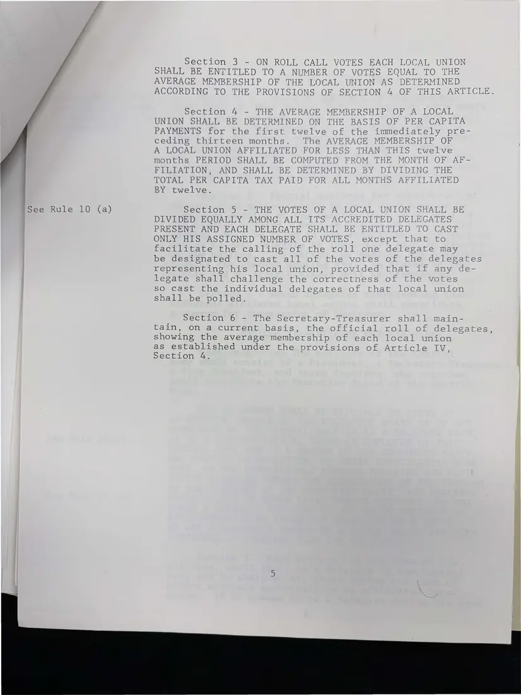
(open zoom view)Read the page text (machine-read, mostly readable)
This text was generated automatically from the photograph and has not been corrected. The image is the authoritative record.
Section 3 - ON ROLL CALL VOTES EACH LOCAL UNION SHALL BE ENTITLED TO A NUMBER OF VOTES EQUAL TO THE AVERAGE MEMBERSHIP OF THE LOCAL UNION AS DETERMINED ACCORDING TO THE PROVISIONS OF SECTION 4 OF THIS ARTICLE. Section 4 - THE AVERAGE MEMBERSHIP OF A LOCAL UNION SHALL BE DETERMINED ON THE BASIS OF PER CAPITA PAYMENTS for the first twelve of the immediately pre- ceding thirteen months. The AVERAGE MEMBERSHIP OF A LOCAL UNION AFFILIATED FOR LESS THAN THIS twelve months PERIOD SHALL BE COMPUTED FROM THE MONTH OF AF- FILIATION, AND SHALL BE DETERMINED BY DIVIDING THE LOTAL PER CAPITA TAX PAID FOR ALL MONTHS AFFILIATED BY twelve. See Rule 10 (a) Section 5 - THE VOTES OF A LOCAL UNION SHALL BE DIVIDED EQUALLY AMONG ALL ITS ACCREDITED DELEGATES PRESENT AND EACH DELEGATE SHALL BE ENTITLED TO CAST ONLY HIS ASSIGNED NUMBER OF VOTES, except that to facilitate the calling of the roll one delegate may be designated to cast all of the votes of the delegates representing his local union, provided that 1f any de- legate shall challenge the correctness of the votes so cast the individual delegates of that local union shall be polled. Section 6 - The Secretary-Treasurer shall main- tain, on a current basis, the official, roll of delegates showing the average membership of each local union as established under the provisions of Article IV, Section 4.

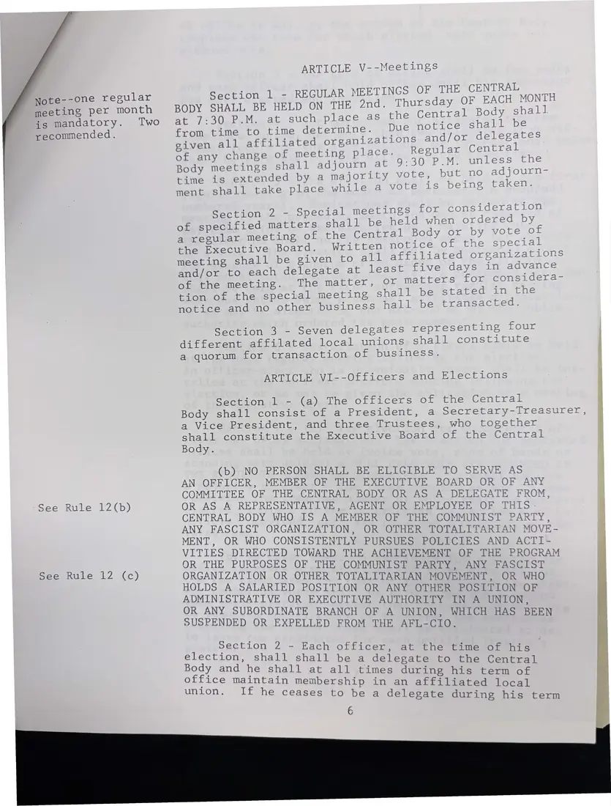
(open zoom view)Read the page text (machine-read, mostly readable)
This text was generated automatically from the photograph and has not been corrected. The image is the authoritative record.
Note--one regular meeting per month is mandatory. recommended. See Rule 12(b) See Rule 12 (c) Two ARTICLE V--Meetings Section 1 - REGULAR MEETINGS OF THE CENTRAL BODY SHALL BE HELD ON THE Ind. Thursday OF EACH ee at 7:30 P.M. at such place as the Central Body sha from time to time determine. Due notice shall be given all affiliated organizations and/or delegates of any change of meeting place. Regular Central 2 Body meetings shall adjourn at 9:30 P.M. unless t e time is extended by a majority vote, but no adjourn- mentsehall, take, place, while.a volte. is being taken. Section 2 - Special meetings for consideration of specified matters shall be held when ordered PY a regular meeting of the Central Body or by vote o the Executive Board. Written notice Osisee special meeting shall be given to aie affiliated organizations and/or to each delegate at least five days in advance of the meeting. The matter, or matters for considera- tion of the special meeting shall be stated in the notice and no other business hall be transacted. Section 3 - Seven delegates representing four different affilated local unions shall constitute a quorum for transaction of business. ARTICLE VL--Officers and Elections Cretionmiae, Gauche officers of the Central Body shall consist of a President, a Secretary-Treasurer, a Vice President, and three Trustees, who together shall constitute the Executive Board of the Central Body. (b) NO PERSON SHALL BE ELIGIBLE TO SERVE AS N OFFICER, MEMBER OF THE EXECUTIVE BOARD OR OF ANY COMMITTEE OF THE CENTRAL BODY OR AS A DELEGATE FROM, OR,.AS A REPRESENTATIVE, AGENT OR EMPLOYEE OF THIS CENTRAL BODY WHO IS A MEMBER OF THE COMMUNIST PARTY, ANY FASCIST ORGANIZATION, OR OTHER TOTALITARIAN MOVE- MENT, OR WHO CONSISTENTLY PURSUES POLICIES AND ACTI- VITIES DIRECTED TOWARD THE ACHIEVEMENT OF THE PROGRAM OR THE PURPOSES OF. THE COMMUNIST PARTY, ANY FASCIST ORGANIZATION OR OTHER TOTALITARIAN MOVEMENT, OR WHO HOLDS A SALARIED POSITION OR ANY OTHER POSITION OF F ADMINISTRATIVE OR EXECUTIVE AUTHORITY IN A UNION, * OR ANY SUBORDINATE BRANCH OF A UNION, WHICH HAS BEEN : SUSPENDED OR EXPELLED FROM THE AFL-CIO. Section 2 - Each officer. at thest memos Pe election, shall shall be a delegate to the Central Body and he shall at all times during his term of t office maintain membership in an affiliated local If he ceases to be a delegate during his term 6 f union.

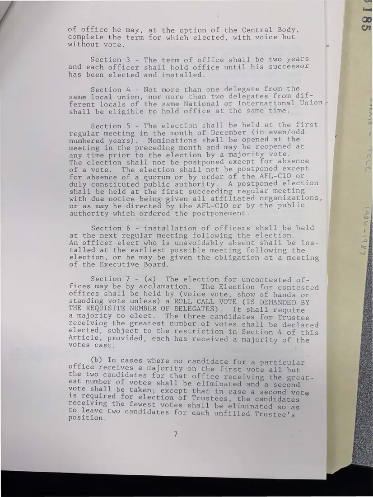
(open zoom view)Read the page text (machine-read, mostly readable)
This text was generated automatically from the photograph and has not been corrected. The image is the authoritative record.
of office he may, at the option of the Central Body, complete the term for which elected, with voice but without vote. é SCcHlonmemeneihne erm Of O1t nce shall spe sewOssycax S and each officer shall hold office until his successor has been elected and installed. Section 4 - Not more than one delegate from the same local union, nor more than two delegates from dif- ferent locals of the same National or International Union, 2 shall be eligible to hold office at the same time. S Section 5 - The election shall be held at the first } regular meeting in the month of December (in even/odd / - numbéred years). Nominations shall be opened at the meeting in the preceding month and may be reopened at 4 any time prior to the election by a majority vote. The election shall not be postponed except for absence - of a vote. The election shall not be postponed except 'e) for absence of a quorum or by order of the AFL-CIO or duly constituted public authority. A postponed election shall be held at the first succeeding regular meeting with due notice being given all affiliated organizations, or as may be directed by the AFL-CIO or by the public authority which ordered the postponement. Section 6 - installation of officers shall be held at the next regular meeting following the election. An officer-elect who is unavoidably absent shall be ins- talled at the earliest possible meeting following the election, or he may be given the obligation at a meeting of the Executive Board. Section 7 - (a) The election for uncontested of- fices may be by acclamation. The Election for contested offices shall be held by (voice vote, show of hands or standing vote unless) a ROLL CALL VOTE (IS DEMANDED BY THE REQUISITE NUMBER OF DELEGATES). It shall require a Majority to elect. The three candidates for Trustee receiving the greatest number of votes shall be declared elected, subject to the restriction in Section 4 of this Article, provided, each has received a Majority of the votes cast. ile (b) In cases where no candidate for a particular office receives a majority on the first vote all but the two candidates for that office receivin @ebhesareat- est number of votes shall be eliminated and a second vote shall be taken; except that in case a second vote is required for election of Trustees, the candidates receiving the fewest votes shall be eliminated sO as to leave two candidates for each unfilled IMAGHAEAS ! & position.

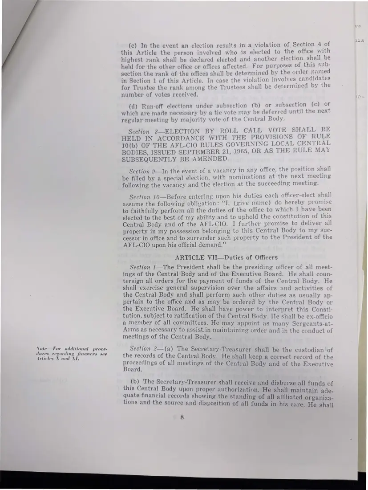
(open zoom view)Read the page text (machine-read, mostly readable)
This text was generated automatically from the photograph and has not been corrected. The image is the authoritative record.
Note—For additional proce- dures regarding finances see irticles \ and NI, (c) In the event an election results in a violation of Section 4 of this Article the person involved who is elected to the office with highest rank shall be declared elected and another election shall be held for the other office or offices affected. For purposes of this sub- section the rank of the offices shall be determined by the order named in Section 1 of this Article. In case the violation involves candidates for Trustee the rank among the Trustees shall be determined by the number of votes received. (d) Run-off elections under subsection (b) or subsection (c) or which are made necessary by a tie vote may be deferred until the next regular meeting by majority vote of the Central Body. Section 8—ELECTION BY ROLL CALL VOTE SHALL BE HELD IN ACCORDANCE WITH THE PROVISIONS OF RULE 10(b) OF THE AFL-CIO RULES GOVERNING LOCAL CENTRAL BODIES, ISSUED SEPTEMBER 21, 1965, OR AS THE RULE MA‘ SUBSEQUENTLY BE AMENDED. Section 9—In the event of a vacancy in any office, the position shall be filled by a special election, with nominations at-the next meeting following the vacancy and the election at the succeeding meeting. Section 10—Before entering upon his duties each officer-elect shall assume the following obligation: “I, (give name) do hereby promise to faithfully perform all the duties of the office to which I have been elected to the best of my ability and to uphold the constitution of this Central Body and of the AFL-CIO. I further promise to deliver all property in my possession belonging to this Central Body to my suc- cessor in office and to surrender such property to the President of the AFL-CIO upon his official demand.” ARTICLE ViI—Duties of Officers Section 1—The President shall be the presiding officer of all meet- ings of the Central Body and of the Executive Board. He shall coun- tersign all orders for the payment of funds of the Central Body. He shall exercise general supervision over the affairs and activities of the Central Body and shall perform such other duties as usually ap- pertain to the office and as may be ordered by the Central Body or the Executive Board. He shall have power to interpret this Consti- tution, subject to ratification of the Central Body. He shall be ex-officio a member of all committees. He may appoint as many Sergeants-at- Arms as necessary to assist.in maintaining order and in the conduct of meetings of the Central Body. Section 2—(a) The Secretary-Treasurer shall be the custodian ‘of the records of the Central Body. He shall keep a correct record of the prospecings of all meetings of the Central Body and of the Executive 3oard. (b) The Secretary-Treasurer shall receive and disburse all funds of this Central Body upon proper authorization. He shall maintain ade- quate financial records showing the standing of all alliliated organiza- tions and the source and disposition of all funds in his care. He shall

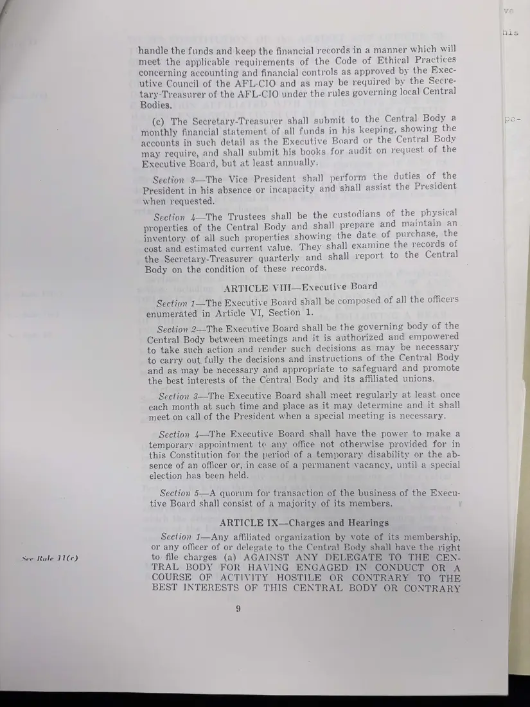
(open zoom view)Read the page text (machine-read, mostly readable)
This text was generated automatically from the photograph and has not been corrected. The image is the authoritative record.
See Rule 11(e¢) handle the funds and keep the financial records in a manner which will meet the applicable requirements of the Code of Ethical Practices concerning accounting and financial controls as approved by the Exec- utive Council of the AFL-CIO and as may be required by the Secre- tary-Treasurer of the AFL-CIO under the rules governing local Central Bodies, (c) The Secretary-Treasurer shall submit to the Central Body a monthly financial statement of all funds in his keeping, showing the accounts in such detail as the Executive Board or the Central Body may require, and shall submit his books for audit on request of the Executive Board, but at least annually. Section 8—The Vice President shall perform the duties of the President in his absence or incapacity and shall assist the President when requested. Section 4—The Trustees shall be the custodians of the physical properties of the Central Body and shall prepare and maintain an inventory of all such properties showing the date of purchase, the cost and estimated current value. They shall examine the records of the Secretary-Treasurer quarterly and shall report to the Central Body on the condition of these records. ARTICLE VIII—Executive Board Section 1—The Executive Board shall be composed of all the officers enumerated in Article VI, Section 1. Section 2—-The Executive Board shall be the governing body of the Central Body between meetings and it is authorized and empowered to take such action and render such decisions as may be necessary to carry out fully the decisions and instructions of the Central Body and as may be necessary and appropriate to safeguard and promote the best interests of the Central Body and its affiliated unions. Section 3—The Executive Board shall meet regularly at least once each month at such time and place as it may determine and it shall meet on call of the President when a special meeting is necessary. Section 4—The Executive Board shall have the power to make a temporary appointment te any office not otherwise provided for in this Constitution for the period of a temporary disability or the ab- sence of an officer or, in case of a permanent vacancy, until a special election has been held. Section 5—A quorum for transaction of the business of the Execu- tive Board shall consist of a majority of its members. ARTICLE IX—Charges and Hearings Section 1—Any affiliated organization by vote of its membership, or any officer of or delegate to the Central Body shall have the right to file charges (a) AGAINST ANY DELEGATE TO THE CEN- TRAL BODY FOR HAVING ENGAGED IN CONDUCT OR A COURSE OF ACTIVITY HOSTILE OR CONTRARY 2O° THE BEST INTERESTS OF THIS CENTRAL BODY OR CONTRARY ils

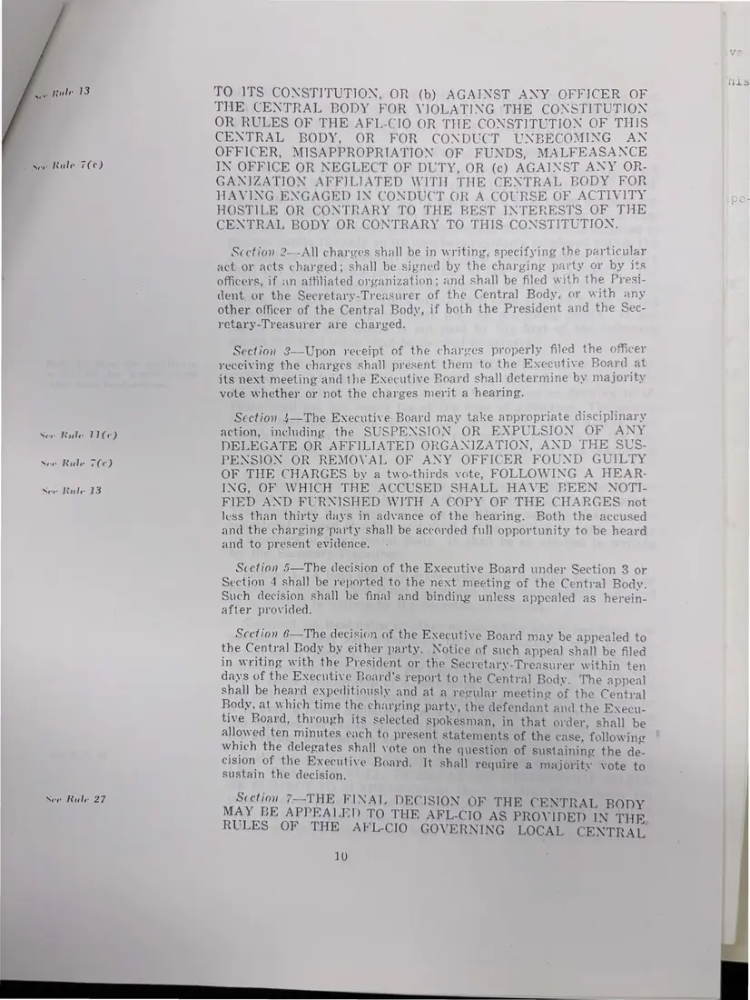
(open zoom view)Read the page text (machine-read, mostly readable)
This text was generated automatically from the photograph and has not been corrected. The image is the authoritative record.
care Rule 13 msereitule 7(c) See Rule 11€e) See Rule 7(c) See Rule 13 See Rule 27 TO ITS CONSTITUTION, OR (b) AGAINST ANY OFFICER OF THE CENTRAL BODY FOR VIOLATING THE CONSTITUTION OR RULES OF THE AFL-CIO OR THE CONSTITUTION OF THIS CENTRAL BODY, OR FOR CONDUCT UNBECOMING AN OFFICER, MISAPPROPRIATION OF FUNDS, MALFEASANCE IN OFFICE OR NEGLECT OF DUTY, OR (c) AGAINST ANY OR- GANIZATION AFFILIATED WITH THE CENTRAL BODY FOR HAVING ENGAGED IN CONDUCT OR A COURSE OF ACTIVITY HOSTILE OR CONTRARY TO THE BEST INTERESTS OF THE CENTRAL BODY OR CONTRARY TO THIS CONSTITUTION. Scetion 2-—All charges shall be in writing, specifying the particular act or acts charged; shall be signed by the charging party or by its officers, if an affiliated organization; and shall be filed with the Presi- dent or the Secretary-Treasurer of the Central Body, or with any other officer of the Central Body, if both the President and the Sec- retary-Treasurer are charged. Section 3—-Upon receipt of the charges properly filed the officer receiving the charges shall present them to the Executive Board at its next meeting and the Executive Board shall determine by majority vote whether or not the charges merit a hearing. Section 4—The Executive Board may take appropriate disciplinary action, including the SUSPENSION OR EXPULSION OF ANY DELEGATE OR AFFILIATED ORGANIZATION, AND THE SUS- PENSION OR REMOVAL OF ANY OFFICER FOUND GUILTY OF THE CHARGES by a two-thirds vote, FOLLOWING A HEAR- ING SOR AW HIGHS RHE MACCUSED? SHALE ®HAVE, “BEEN UNOTI- FIED AND FURNISHED WITH A COPY OF THE CHARGES not less than thirty days in advance of the hearing. Both the accused and the charging party shall be accorded full opportunity to be heard and to present evidence. Scction 5—The decision of the Executive Board under Section 3 or Section 4 shall be reported to the next meeting of the Central Body. Such decision shall be final and binding unless appealed as herein- after provided. Section 6—The decision of the Executive Board may be appealed to the Central Body by either party. Notice of such appeal shall be filed in writing with the President or the Secretary-Treasurer within ten days of the Executive Board’s report to the Central Body. The appeal shall be heard expeditiously and at a reeular meeting of the Central Body, at which time the charging party, the defendant and the Execu- tive Board, through its selected spokesman, in that order, shall be allowed ten minutes each to present statements of the case, following which the delegates shall vote on the question of sustaining the de- cision of the Executive Board. It shall require a majority vote to sustain the decision. Scetion 7—-THE FINAL DECISION OF THE CENTRAL BODY MAY BE APPEALED TO THE AFL-CIO AS PROVIDED IN THR, RULES OF THE AFL-CIO GOVERNING LOCAL CENTRAL

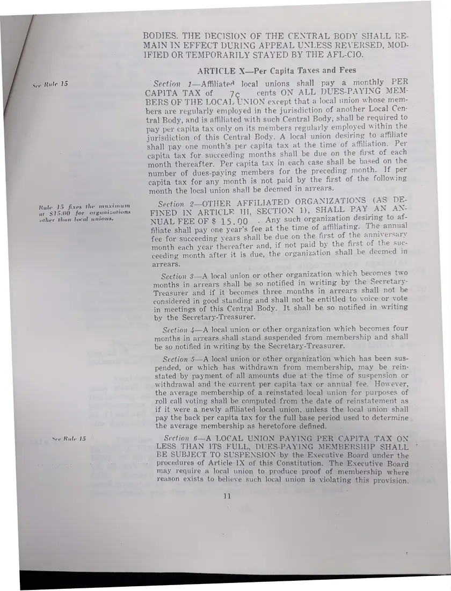
(open zoom view)Read the page text (machine-read, mostly readable)
This text was generated automatically from the photograph and has not been corrected. The image is the authoritative record.
BODIES. THE DECISION OF THE CENTRAL BODY SHALL RE- MAIN IN EFFECT DURING APPEAL UNLESS REVERSED, MOD- IFIED OR TEMPORARILY STAYED BY THE AFL-CIO. ARTICLE X—Per Capita Taxes and Fees See Rule 15 Section 1—Affliated local unions shall pay a monthly PER CAPITA TAX of 3 cents ON ALL DUES-PAYING MEM- BERS OF THE LOCAL UNION except that a local union whose mem- bers are regularly employed in the jurisdiction of another Local Cen- tral Body, and is affiliated with such Central Body, shall be required to pay per capita tax only on its members regularly employed within the | jurisdiction of this Central Body. A local union desiring to affiliate | shall pay one month’s per capita tax at the time of affiliation. Per capita tax for succeeding months shall be due on the first of each month thereafter. Per capita tax in each case shall be based on the number of dues-paying members for the preceding month. If per capita tax for any month is not paid by the first of the following month the local union shal] be deemed in arrears. Rule 15 fixes the maximum Section 2—OTHER AFFILIATED ORGANIZATIONS (AS DE- at_ 315.00 for organisutions FINED IN ARTICLE Ill, SECTION 1), SHALL PAY AN AN- other thee aaeae NUAL FEE OF $ 15.90 . Any such organization desiring to af- filiate shall pay one year’s fee at the time of affiliating. The annual fee for succeeding years shall be due on the first of the anniversary month each year thereafter and, if not paid by the first of the suc- ceeding month after it is due, the organization shall be deemed in arrears. Section 3A local union or other organization which becomes two months in arrears shall be so notified in writing by the Secretary- Treasurer and if it becomes three months in arrears shall not be considered in good standing and shall not be entitled to voice or vote in meetings of this Central Body. It shall be so notified in writing by the Secretary-Treasurer. Section 4—A local union or other organization which becomes four months in arrears shall stand suspended from membership and shall be so notified in writing by the Secretary-Treasurer. Section 5—A Jocal union or other organization which has been sus- pended, or which has withdrawn from membership, may be rein- stated by payment of all amounts due at the time of suspension or withdrawal and the current per capita tax or annual fee. However, the average membership of a reinstated local union for purposes of roll call voting shall be computed from the date of reinstatement as if it were a newly affiliated local union, unless the local union shall pay the back per capita tax for the full base period used to determine the average membership as heretofore defined. Section 6—A LOCAL UNION PAYING PER CAPITA TAX ON LESS THAN ITSSFULL,! DUESSPAMINGS MEMBERSHIP SHALE BE SUBJECT TO SUSPENSION by the Executive Board under the procedures of Article-IX of this Constitution. The Executive Board may require a local union to produce proof of membership where reason exists to believe such local union is violating this provision See Rule 15 2 ene Ree c

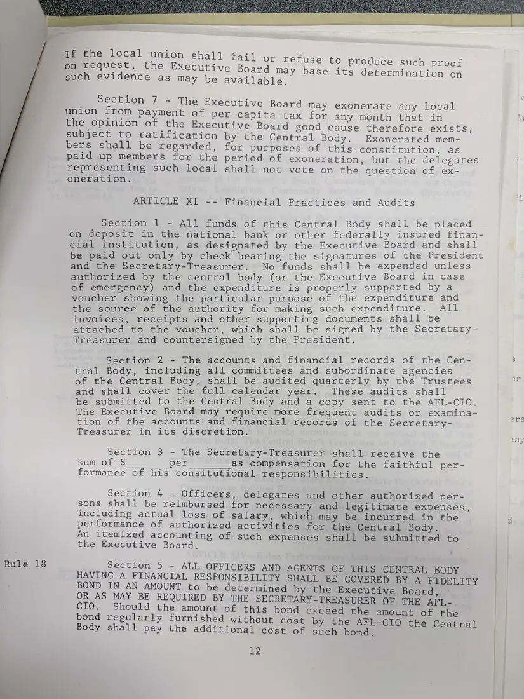
(open zoom view)Read the page text (machine-read, mostly readable)
This text was generated automatically from the photograph and has not been corrected. The image is the authoritative record.
Riile 18 Memene local union shall fail or refuse to produce such proof on request, the Executive Boar : d may base its determination on such evidence as May be available. Section 7 - The Executive Board May exonerate any local union trom payment of LTO per capita tax for any month that in the opinion of the Executive Board good cause therefore exists, subject to ratification by the Central Body. Exonerated mem- bers shall be regarded, for purposes of this constitution, as paid up members for the period of exoneration, but the delegates representing such local shall not vote on the question of ex- oneration. ARTICLE XI -- Financial Practices and Audits Seen binds Of this Central Body shall. be placed on deposit in the national bank or other federally insured finan- cial institution, as designated by the Executive Board and shall be paid out only by check bearing the signatures of the President and the Secretary-Treasurer. No funds shall be expended unless authorized by the central body (or the Executive Board in case of emergency) and the expenditure is properly supported by a voucher showing the particular purpose of the expenditure and the souree of the authority for making such expenditure. All invoices, receipts and other supporting documents shall be attached to the voucher, which shall be signed by the Secretary- Treasurer and countersigned by the President. Section 2 - The accounts and financial records of the Cen- 2 tral Body, including all committees and subordinate agencies & of the Central Body, shall be audited quarterly by the Trustees Pe and shall cover the .fullyealendar year. These audits shall be submitted to the Central Body and a copy sent to the AFL-CIO. The Executive Board may require more frequent audits or examina- =pat- tion of the accounts and financial records of the Secretary- Treasurer in its discretion. Section 3 - The Secretary-Treasurer shall receive the sum of $ per as compensation for the faithful per- formance of his consitutional responsibilities. Section 4 - Officers, delegates and other authorized per- sons shall be reimbursed for necessary and legitimate expenses, including actual loss of salary, which may be incurred in the performance of authorized activities for the Central Body. [ An itemized accounting of such expenses shall be submitted to the Executive Board. Section 5 - ALL OFFICERS AND AGENTS OF THIS CENTRAL BODY HAVING A FINANCIAL RESPONSIBILITY SH ALL BE COVERED BY A FIDELITY BOND IN AN AMOUNT to be determined by the Executive Board, - OR AS MAY BE REQUIRED BY THE SECRETARY-TREASURER OF THE AFL- CIO. Should the amount of this bond exceed the amount of the bond regularly furnished without cost b y the AFL-CIO the Central Body shall pay the additional cost of such bond,

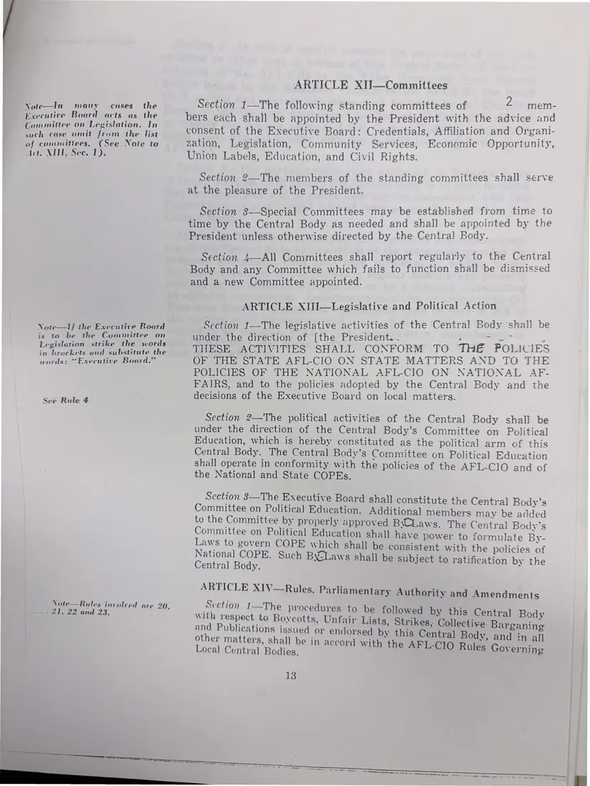
(open zoom view)Read the page text (machine-read, mostly readable)
This text was generated automatically from the photograph and has not been corrected. The image is the authoritative record.
Note—In many cases the Executive Board acts as the Committee on Legislation, In such case omit from the list of committees. (See Note to dit. NIL, See. 1). Note—lIf the Executive Board is to be the Committee on Legislation strike the words in brackets and substitute the words: “Executive Board.” - See Rule 4 Note—Rules involred are 20, ode and 23. ARTICLE XII—Committees Section 1—The following standing committees of 2 mem- bers each shall be appointed by the President with the advice and consent of the Executive Board: Credentials, Affiliation and Organi- zation, Legislation, Community Services, Economie Opportunity, Union Labels, Education, and Civil Rights. Section 2—The members of the standing committees shall] serve at the pleasure of the President. ; Section 8—Special Committees may be established from time to time by the Central Body as needed and shall be appointed by the President unless otherwise directed by the Centra] Body. Section 4—All Committees shall report regularly to the Central Body and any Committee which fails to function shall be dismissed and a new Committee appointed. ARTICLE X]J]—Legislative and Political Action Section 1—The legislative activities of the Central Body shall be under the direction of [the President... wan iat r THESE ACTIVITIES SHALL CONFORM TO THE POLICIES Ob thibhaslArh AbE=ClO ON STATE MATTERS AND TO THE POLICIES OF THE NATIONAL AFL-CIO ON NATIONAL AF- FAIRS, and to the policies adopted by the Central Body and the _ decisions of the Executive Board on local matters. Section 2—The political activities of the Central Body shall be under the direction of the Central Body’s Committee on Political Education, which is hereby constituted as the political arm of this Central Body. The Central Body’s Committee on Political Education shall operate in conformity with the policies of the AFL-CIO and of the National and State COPEs. Section 8—The Executive Board shall constitute the Central Body’s Committee on Political Education. Additional members may be added to the Committee by properly approved BxCLaws. The Central Body's Committee on Political Education shall have power to formulate By- Laws to govern COPE which shall be consistent with the policies of National COPE. Such By2Laws shall b + _ ae : Central ene XoL € Subject to ratification by the ARTICLE XIV—Rules, Parliamentary Authority and ten dents Section 1—The procedures to be follow j Sect ed by this Central with respect to Boycotts, Unfair Lists, Strikes, Collective B te and Publications issued or endorsed by this Central Body other matters, shall be in accord rit Local Central Bodies. with the AFL-CIO Rules arganing and in all Governing

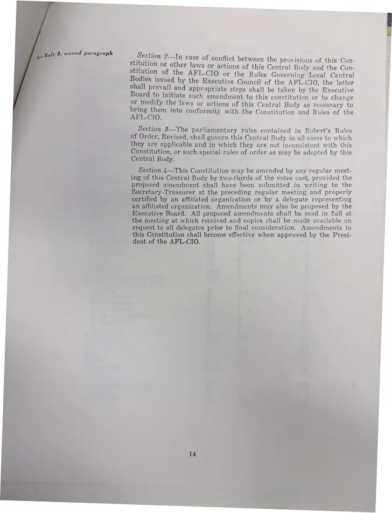
(open zoom view)Read the page text (machine-read, mostly readable)
This text was generated automatically from the photograph and has not been corrected. The image is the authoritative record.
pacction 2—In case of conflict between the provisions of this Con- i enor other Jaws or actions of this Central Body and the Con- he AFL-CIO or the Rules Governing Local Central by the Executive Council of the AFL-CIO, the Jatter nd appropriate steps shall be taken by the Executive such amendment to this constitution or to change aws or actions of this Central Body as necessary to ity with the Constitution and Rules of the tary rules contained in Robert’s Rules this Central Body in all cases to which are not inconsistent with this s of the votes cast, provided the n submitted in writing to the regular meeting and properly or by a delegate representing y also be proposed by the ents shall be read in full at s shal] be made available on on. Amendments to

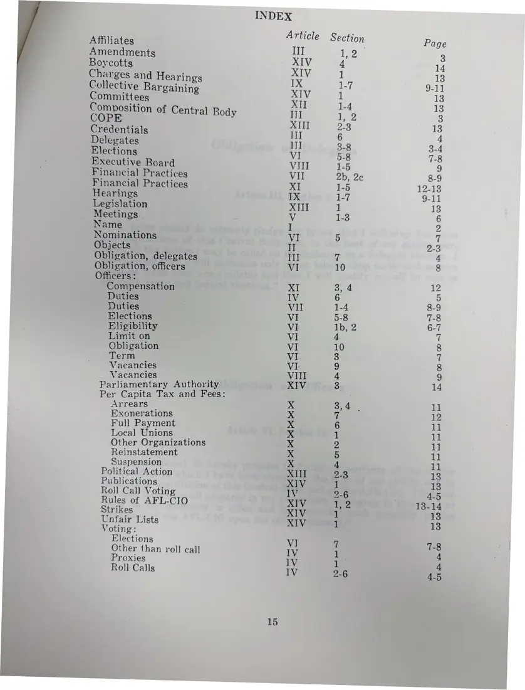
(open zoom view)Read the page text (machine-read, mostly readable)
This text was generated automatically from the photograph and has not been corrected. The image is the authoritative record.
INDEX Article Secti Affiliates i fa Amendments XIV Ue Boycotts XIV : Charges and Hearings IX 1-7 Collective Bargaining XIV 1 Committees XII 1-4 Composition of Central Body III 1, 2 COPE XIII 2-3 Credentials III 6 Delegates Ill 3.8 Elections VI 5-8 Executive Board VIII 1-5 Financial Practices VII 2b, 2c Financial Practices XI 1-5 Hearings IX 1-7 Legislation XIII 1 Meetings | ee Vv 1-3 Name I Nominations VI 5 Objects I] Obligation, delegates III fj Obligation, officers VI 10 Officers: Compensation XI 3, 4 Duties rN 6 Duties Vil 1-4 Elections VI 5-8 Eligibility VI 1b, 2 Limit on Vi 4 Obligation VI 10 Term Vi 3 Vacancies VI: 9 Vacancies VIII 4 Parliamentary Authority XIV 3 Per Capita Tax and Fees: Arrears ».4 3,4 Exonerations ».4 7 Ful] Payment ox 6 Local Unions xX 1 Other Organizations xX 2 Reinstatement x 5 Suspension ».¢ 4 Political Action XIII Ve Publications XIV 1 Roll Call Voting IV 2-6 Rules of AFL-CIO XIV sur Strikes XIV 1 Unfair Lists XIV 1 Voting: Elections VI 7 Other than roll cal] IV 7 Proxies IV le Roll Calls TM 2-6 an ~ ND OWING i CO 00 ~1.00 ~I~1.00 CO cn

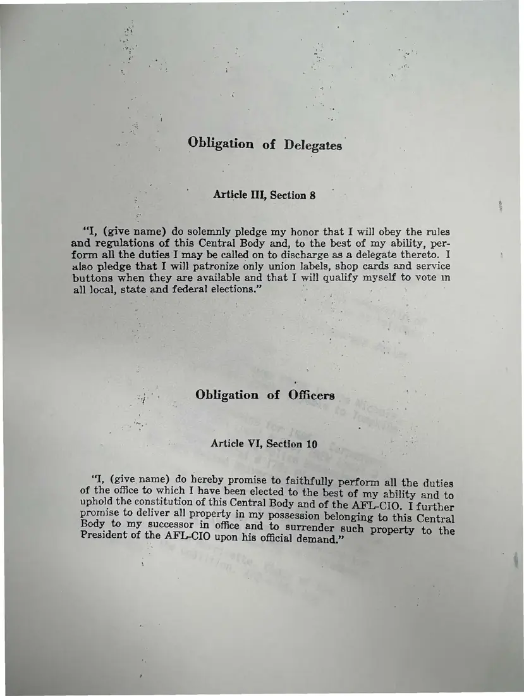
(open zoom view)Read the page text (machine-read, mostly readable)
This text was generated automatically from the photograph and has not been corrected. The image is the authoritative record.
Obligation of Delegates Article III, Section 8 “I, (give name) do solemnly pledge my honor that I will obey the rules and regulations of this Central Body and, to the best of my ability, per- form all the duties I may be called on to discharge as a delegate thereto. I also pledge that I will patronize only union Jabels, shop cards and service buttons when they are available and that I will qualify myself to vote in all local, state and federal elections.” ‘ : : 7 '. Obligation of Officers Article VI, Section 10 “I, (give name) do hereby promise to faithfully perform all the duti of the office to which I have been elected to the best of my ability Pritts uphold the ae ea of this Central Body and of the AFL-CIO, I further promise to deliver all property in my possession belonpi - Body to my successor in office and mee mewe ne ea. nis Central A to surrender h President of the AFL-CIO upon his official demand.” >) °° ‘he
See something wrong, or recognize a person or event? Send a correction. If you hold rights in this item or think it should not be public, write to the same address.